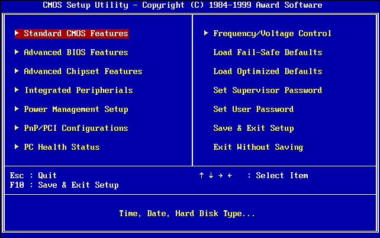
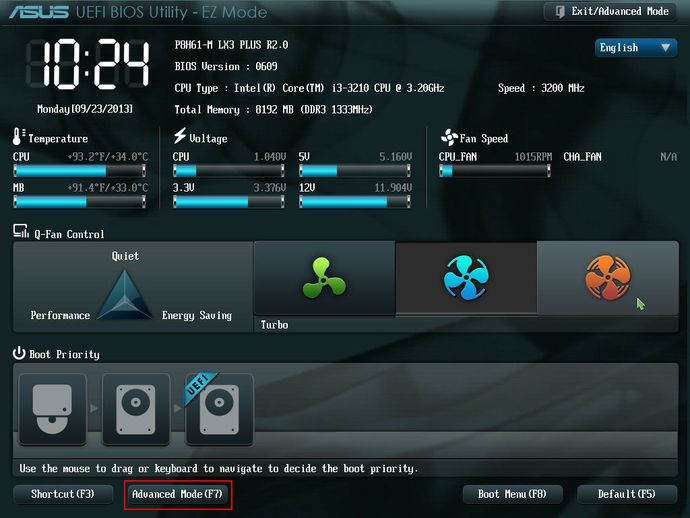
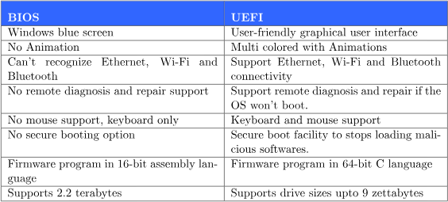
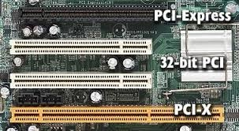
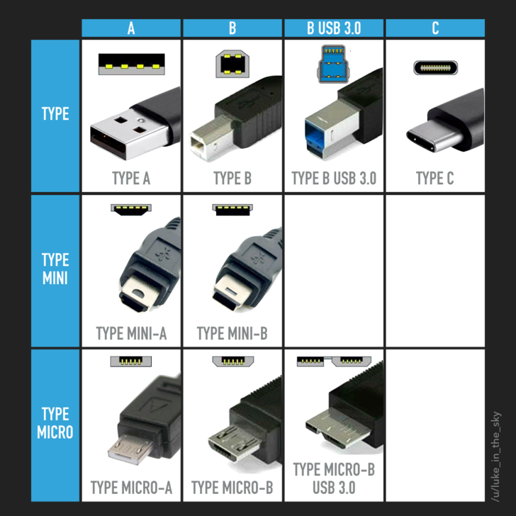
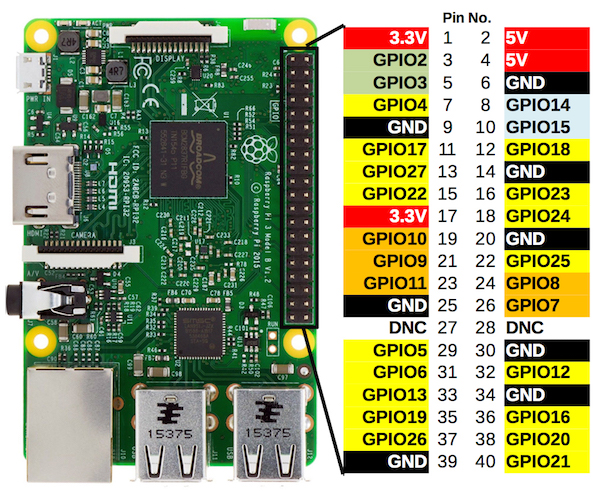

101.1 تنظیمات سخت افزاری را تعیین و پیکربندی کنید
وزن: 2
داوطلبان باید قادر به تعیین و پیکربندی سخت افزار اساسی سیستم باشند.
اهداف
- دستگاه های جانبی یکپارچه را فعال و غیرفعال کنید
- بین انواع مختلف دستگاه های ذخیره سازی انبوه تفاوت قائل شوید
- تعیین منابع سخت افزاری برای دستگاه ها
- ابزارها و ابزارهای کمکی برای فهرست کردن اطلاعات سخت افزاری مختلف (مانند lsusb، lspci و غیره)
- ابزارها و ابزارهای کمکی برای دستکاری دستگاه های USB
- درک مفهومی sysfs، udev، dbus
/sys/proc/dev- modprobe
- lsmod
- lspci
- lsusb
در مورد سخت افزار اطلاعات کسب کنید
سیستم عامل (OS) نرم افزار سیستمی است که سخت افزار و منابع نرم افزاری کامپیوتر را مدیریت می کند و خدمات مشترکی را برای برنامه های کامپیوتری ارائه می دهد. در بالای سخت افزار قرار می گیرد و زمانی که نرم افزارهای دیگر (گاهی اوقات برنامه فضای کاربری نامیده می شود) آن را درخواست می کنند، منابع را مدیریت می کند.
Firmware نرم افزار روی سخت افزار شماست که آن را اجرا می کند. آن را به عنوان یک سیستم عامل داخلی یا درایور برای سخت افزار خود در نظر بگیرید. مادربردها برای اینکه بتوانند کار کنند نیاز به سیستم عامل دارند.
Firmware نوعی نرم افزار است که در سخت افزار زندگی می کند. نرم افزار به هر برنامه یا گروهی از برنامه ها گفته می شود که توسط کامپیوتر اجرا می شوند.

1. BIOS (سیستم ورودی/خروجی پایه). قدیمی و زائد. از طریق یک سیستم مبتنی بر منوی متنی قابل حل نیست و با دسترسی به بخش اول اولین پارتیشن دیسک سخت شما (MBR) کامپیوتر را بوت می کند. این برای سیستم های مدرن کافی نیست و اکثر سیستم ها از روش بوت دو مرحله ای استفاده می کنند.
2. UEFI (رابط یکپارچه نرم افزار توسعه پذیر). به عنوان EFI در سال 1998 در اینتل شروع به کار کرد. حالا استاندارد. از یک پارتیشن دیسک خاص برای بوت (EFI System Partition (ESP)) استفاده می کند و از FAT استفاده می کند. در لینوکس در/boot/efi قرار دارد و فایلها از پسوند .efi استفاده میکنند. شما باید هر بوتلودر (Bootloader) را ثبت کنید.

دستگاه های جانبی
اینها رابط های دستگاه هستند.
PCI
اتصال اجزای جانبی کاربر را قادر می سازد تا اجزای اضافی را به مادربرد اضافه کند. اکنون اکثر سرورها از PCI Express (PCIe) استفاده می کنند

- هارد دیسک داخلی
- پاتا (قدیمی)
- SATA (سریال و حداکثر 4 دستگاه) (II-III)
- SCSI (موازی و حداکثر 8 دستگاه) (رابط سیستم کامپیوتری کوچک)
- هارد دیسک خارجی
- فیبر (ارائه اتصال داده با سرعت بالا)
- SSD روی USB
- کارت های شبکه RJ 45 (جک ثبت شده 45)
- کارت های بی سیم IEEE 802.11
- بلوتوث IEEE 802.15 (استاندارد فناوری بی سیم برد کوتاه (تا 10 متر))
- شتاب دهنده های ویدئویی مدارهای سخت افزاری روی کارت گرافیک که سرعت فیلمبرداری تمام حرکت را افزایش می دهد.
- کارت های صوتی
SSD در مقابل HDD
- حافظه های SSD سریع تر (تا 10 بار خواندن و تا 20 بار سریع تر می نویسند)، ساکت تر، کوچکتر، بادوام تر و مصرف انرژی کمتری دارند، در حالی که هاردهای HDD ارزان تر هستند و ظرفیت ذخیره سازی بیشتری را ارائه می دهند و در صورت آسیب، بازیابی آسان تر داده ها را ارائه می دهند.
- SSD ها قطعات متحرکی مانند بازوهای محرک و صفحات چرخان مانند هارد دیسک ندارند (یک SSD از حافظه فلش بدون هیچ قطعه متحرک استفاده می کند). این یکی از دلایلی است که SSD ها می توانند در برابر افت تصادفی و سایر شوک ها، لرزش، دمای شدید و میدان های مغناطیسی بهتر از HDD مقاومت کنند.
- هارد دیسک ها حدود 3 تا 5 سال عمر می کنند، SSD ها می توانند تا 10 سال یا بیشتر دوام بیاورند. (درایوهای SSD فعلی دارای ظرفیت ذخیره هستند. این فضاهای ذخیره سازی در دسترس کاربر نیست، اما به اصطلاح برای تعمیر سلول های آسیب دیده استفاده می شود. سلول های معیوب با سلول های ذخیره کاملاً جدید جایگزین می شوند؛ این روش "Bad-Block-Management" نامیده می شود. بنابراین سلول های ذخیره سازی SSD در عملکرد عادی یک عمر دوام می آورند.)
کارت های شبکه در مقابل کارت های بی سیم
- NIC (کارت رابط شبکه) اتصال شبکه محاسباتی را روی یک دستگاه محاسباتی به شبکه اترنت در خانه یا دفتر از طریق پورت RJ45 فراهم می کند. کارت آداپتور بیسیم اتصال بیسیم به شبکه محاسباتی را فراهم میکند که توسط نقاط دسترسی در محل (در خانه یا محل کار) در یک دستگاه محاسباتی فعال شده است.
- کارت های بی سیم نصب شده بر روی یک کامپیوتر صنعتی برای فعال کردن اتصال بی سیم به اینترنت استفاده می شود.
USB
گذرگاه سریال عمومی (USB). سریال و نیاز به اتصالات کمتری دارد.

- 1 (12 مگابیت در ثانیه)، 2 (480 مگابیت در ثانیه)، 3 (گذرگاه PCI.e 2.0: 5 گیگابیت در ثانیه، PCI.e 3.0 باس: 10 گیگابیت در ثانیه، PCI.e 3.2 باس: 20 گیگابیت در ثانیه، PCI.e گذرگاه 4.0: 40 گیگابیت در ثانیه)
- الف، ب، ج
GPIO
خروجی ورودی همه منظوره

- برای کنترل دستگاه های دیگر
- به عنوان مثال می توان به Arduino، Raspberrypi و غیره اشاره کرد.
Sysfs
Sysfs یک سیستم فایل شبه ارائه شده توسط هسته لینوکس است که اطلاعات مربوط به زیرسیستم های مختلف هسته، دستگاه های سخت افزاری و درایورهای دستگاه مرتبط را از مدل دستگاه هسته به فضای کاربر از طریق فایل های مجازی صادر می کند.[1] علاوه بر ارائه اطلاعات در مورد دستگاه های مختلف و زیر سیستم های هسته، از فایل های مجازی صادراتی نیز برای پیکربندی آنها استفاده می شود.
Sysfs در زیر نقطه مانت (Mount Point) /sys نصب شده است.
jadi@funlife:~$ ls /sys
block bus class dev devices firmware fs hypervisor kernel module power
همه دستگاههای بلوک در دایرکتوری block و bus هستند، همه دستگاههای PCI، USB، سریال و ... متصل هستند. توجه داشته باشید که در اینجا در sys ما دستگاهها را بر اساس فناوری آنها داریم اما /dev/ انتزاعی شده است.
udev
udev (userspace /dev) یک مدیر دستگاه برای هسته لینوکس است. به عنوان جانشین devfsd و hotplug، udev عمدتاً گرههای دستگاه را در دایرکتوری /dev مدیریت میکند. در همان زمان، udev همچنین تمام رویدادهای فضای کاربر را که هنگام افزودن دستگاههای سختافزاری به سیستم یا حذف آنها از آن، از جمله بارگذاری میانافزار در صورت نیاز توسط دستگاههای خاص، ایجاد میشوند، مدیریت میکند.
دستگاههای زیادی در /dev/ وجود دارد و اگر دستگاهی را وصل کنید، فایلی در /dev به آن اختصاص داده میشود (مثلا /dev/sdb2). udev به شما امکان میدهد کنترل کنید که چه چیزی در /dev چیست. به عنوان مثال، میتوانید از یک قانون استفاده کنید تا درایو فلش 128 گیگابایتی خود را با یک فروشنده خاص مجبور کنید که هر بار که آن را متصل میکنید /dev/mybackup باشد و حتی میتوانید به محض اتصال آن، یک پردازش برگشتی را شروع کنید.
در اصل، udev به عنوان نگهبان دایرکتوری /dev/ عمل می کند. نمایش دستگاههایی مانند هارد دیسک را که با نام های /dev/sda یا /dev/hd0 شناسایی میشود، صرف نظر از سازنده، مدل، یا فناوری زیربنایی آن، خلاصه میشود.
root@funlife:/dev# ls /dev/sda*
/dev/sda /dev/sda1 /dev/sda2 /dev/sda3 /dev/sda5 /dev/sda6
اگر برنامه ای بخواهد از/روی دستگاهی بخواند/بنویسد، از فایل مربوطه در /dev برای این کار استفاده می کند. این را می توان در دستگاه های شخصیت یا دستگاه های مسدود انجام داد. هنگام فهرست کردن، یک b یا c این را نشان می دهد:
root@ocean:~# ls -ltrh /dev/ # Partial output is shown
crw-rw---- 1 root tty 4, 1 Dec 15 2019 tty1
crw-rw-rw- 1 root root 1, 5 Dec 15 2019 zero
brw-rw---- 1 root disk 1, 0 Dec 15 2019 ram0
brw-rw---- 1 root disk 253, 0 Dec 15 2019 /dev/vda
dbus
D-Bus یک سیستم گذرگاه پیام است، روشی ساده برای صحبت برنامهها با یکدیگر. علاوه بر ارتباطات بین فرآیندی، D-Bus به هماهنگ کردن چرخه حیات فرآیند کمک می کند. کدگذاری یک برنامه یا دیمون "تک نمونه" و راه اندازی برنامه ها و دیمون ها در صورت نیاز در صورت نیاز به خدمات آنها ساده و قابل اعتماد است.
دایرکتوری ## proc این جایی است که هسته تنظیمات و ویژگی های خود را حفظ می کند. این دایرکتوری روی رم ایجاد می شود و فایل ها ممکن است دسترسی به نوشتن داشته باشند (مثلاً برای برخی از تنظیمات سخت افزاری). می توانید مواردی مانند:
- IRQ (درخواست وقفه)
- پورت های ورودی/خروجی (مکان هایی در حافظه که CPU می تواند با دستگاه ها صحبت کند)
- DMA (دسترسی مستقیم به حافظه، سریعتر از پورت های ورودی/خروجی)
- فرآیندها
- تنظیمات شبکه -...
$ ls /proc/
1 1249 1451 1565 18069 20346 2426 2765 2926 3175 3317 3537 39 468 4921 53 689 969 filesystems misc sysvipc
10 13 146 157 18093 20681 2452 2766 2929 3183 3318 354 397 4694 4934 538 7 97 fs modules timer_list
1039 1321 147 1572 18243 21 2456 28 2934 3187 34 3541 404 4695 4955 54 737 acpi interrupts mounts timer_stats
10899 13346 148 1576 18274 21021 2462 2841 2936 3191 3450 3550 41 47 4970 546 74 asound iomem mtrr tty
10960 13438 14817 158 1859 21139 25 2851 2945 32 3459 357 42 4720 4982 55 742 buddyinfo ioports net uptime
11 13619 149 16 18617 2129 2592 2852 2947 3202 3466 36 43 4731 4995 551 75 bus irq pagetypeinfo version
11120 13661 15 1613 18781 214 26 2862 2948 3206 3467 3683 44 4756 5 56 77 cgroups kallsyms partitions version_signature
11145 13671 150 1630 1880 215 27 2865 2952 3208 3469 3699 4484 4774 50 577 8 cmdline kcore sched_debug vmallocinfo
1159 13927 151 1633 1882 2199 2707 2866 2955 3212 3470 37 4495 4795 5008 5806 892 consoles keys schedstat vmstat
1163 14 1512 1634 19 22 2708 2884 2957 3225 3474 3710 45 48 5013 60 9 cpuinfo key-users scsi zoneinfo
1164 14045 1515 1693 19061 2219 2709 2887 2961 3236 3475 3752 4506 4811 5077 61 904 crypto kmsg self
1170 14047 152 17 19068 23 2710 2891 3 324 3477 3761 4529 4821 5082 62 9061 devices kpagecount slabinfo
1174 14052 153 17173 19069 23055 2711 2895 3047 3261 3517 3778 4558 484 5091 677 915 diskstats kpageflags softirqs
12 1409 154 1732 19075 2354 2718 29 3093 3284 3522 38 4562 4861 51 678 923 dma loadavg stat
1231 1444 155 17413 2 2390 2719 2904 31 3287 3525 3803 46 4891 52 679 939 driver locks swaps
1234 1446 156 17751 20 24 2723 2908 3132 3298 3528 3823 4622 49 5202 680 940 execdomains mdstat sys
1236 145 1563 18 2028 2418 2763 2911 3171 33 3533 3845 4661 4907 525 687 96 fb meminfo sysrq-trigger
اعداد شناسه فرآیند هستند! همچنین فایل های دیگری مانند cpuinfo، mounts، meminfo،...
کد4_
اینجا هم میتونیم بنویسیم از آنجایی که من از لپ تاپ IBM Lenovo استفاده می کنم، می توانم LED خود را با نوشتن اینجا روشن و خاموش کنم:
کد5_
یک مثال سنتی دیگر تغییر حداکثر تعداد فایل های باز در سراسر سیستم است:
کد6_
دایرکتوری بسیار مفید دیگر در اینجا، /proc/sys/net/ipv4 است که تنظیمات شبکه بلادرنگ را کنترل می کند.
همه این تغییرات پس از بوت شدن برگردانده می شوند. برای دائمی کردن این تغییرات باید در فایل های پیکربندی در
/etc/بنویسید
خودت را امتحان کن! /proc/ioports یا /proc/dma یا /proc/iomem را بررسی کنید.
lsusb، lspci، lsblk، lshw
درست مانند ls اما برای pci، usb، ...
lspci
دستگاه های PCI که به کامپیوتر متصل هستند را نشان می دهد.
کد7_
lsusb
تمام دستگاه های USB متصل به سیستم را نشان می دهد.
کد8_
lshw
سخت افزار را نشان می دهد. ممکن است برای دریافت لیست کامل نیاز به وضعیت ریشه داشته باشد. تستش کن
lsblk
برای لیست دستگاه هایی که می توانند از بلوک های داده بخوانند یا بنویسند استفاده می شود.
ماژول های هسته قابل بارگیری
لینوکس مانند هر سیستم عامل دیگری برای کار با سخت افزار به درایور نیاز دارد. در ویندوز مایکروسافت، شما باید درایورها را جداگانه نصب کنید، اما در لینوکس، سیستم اکثر درایورها را داخلی دارد. اما برای جلوگیری از بارگذاری همزمان هسته و کاهش اندازه هسته، لینوکس از ماژول های هسته استفاده می کند. ماژولهای هسته قابل بارگیری (فایلهای ko) فایلهای شی هستند که برای گسترش هسته توزیع لینوکس استفاده میشوند. آنها برای ارائه درایورهایی برای سخت افزارهای جدید مانند کارت های توسعه اینترنت اشیا که در توزیع لینوکس گنجانده نشده اند استفاده می شوند.
میتوانید ماژولها را با استفاده از lsmod بررسی کنید یا از طریق دستورات modprobe مدیریت کنید.
lsmod
ماژول های هسته را نشان می دهد. آنها در /lib/modules واقع شده اند.
کد9_
اینها ماژول های هسته هستند که بارگذاری می شوند. برای دریافت اطلاعات بیشتر در مورد یک ماژول از modinfo استفاده کنید. اگر بخواهید.
اگر نیاز دارید یک ماژول به هسته خود اضافه کنید (مثلاً یک درایور جدید برای سخت افزار) یا آن را حذف کنید (درایور را حذف نصب کنید)، می توانید از rmmod و modprobe استفاده کنید.
# rmmod iwlwifi
و این برای نصب ماژول ها است:
# insmod kernel/drivers/net/wireless/iwlwifi.ko
اما هیچکس از insmod استفاده نمیکند، زیرا وابستگیها را درک نمیکند و باید کل مسیر فایل ماژول را به آن بدهید. در عوض، از دستور modprobe استفاده کنید:
# modprobe iwlwifi
میتوانید از سوئیچ
-fبه FORCErmmodبرای حذف ماژول حتی اگر در حال استفاده است استفاده کنید
اگر هر بار که سیستمتان بوت می شود نیاز به بارگیری چند ماژول دارید یکی از موارد زیر را انجام دهید:
- نام آنها را به این فایل اضافه کنید
/etc/modules - فایل های پیکربندی آنها را به
/etc/modprobe.d/اضافه کنید